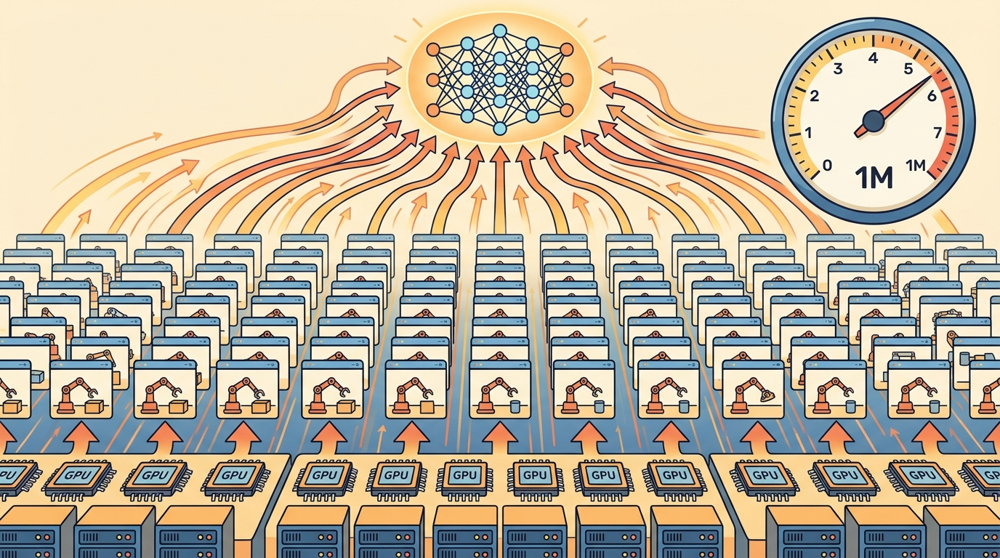

"A million frames per second means nothing if they all arrive after the budget is gone."
A GPU Cluster Invoice

This section assumes familiarity with Proximal Policy Optimization (PPO) rollout semantics from section 15.5 and advantage computation from section 15.3, because those steps contribute the learner-time term in the cost ledger. The simulator options discussed in section 17.3 and the JIT compilation behaviour covered in section 17.4 determine the rollout-time term. The cost-per-success discipline developed here reappears in Part VI alongside deployment budget constraints, where the same accounting applies to inference rather than training.
A robot manipulation policy trained overnight on eight GPUs looks impressive until the invoice arrives: four hours of that run were spent waiting for evaluation, another two on logging, and the checkpoint that actually solved the task appeared with forty minutes of budget left. Steps per second is a marketing number. For embodied AI, where training costs compound across hundreds of experiments, the metric that changes decisions is dollars per successful checkpoint. You will build a cost ledger that breaks every run into its true components, so you can stop optimizing the wrong bottleneck and start shipping policies that are both capable and affordable.
For Throughput, wall-clock, and cost engineering, GPU RL depends on simulator fidelity, PPO rollout semantics, reward terms, and reset distribution being versioned in the same training artifact.
This section develops the cost contract for massively parallel RL. We define the denominator for every claim: environment steps per second, policy updates per minute, wall-clock to target success, GPU memory at peak, evaluation time, and dollars per successful checkpoint.
The key question is practical: did the optimization make learning cheaper, or did it only move time from rollout collection into compilation, synchronization, logging, or evaluation? A run reporting 2,000,000 steps per second can still cost more than a run reporting 400,000 steps per second: if the faster system spends 40 percent of wall-clock on evaluation and another 15 percent on logging, the slower system reaches the 90 percent held-out threshold first and at lower dollar cost.
Steps per second is a systems metric. Wall-clock to held-out success is the learning metric that matters to a builder deciding what to run next.
Students often assume that maximizing environment steps per second minimizes training cost and time to a deployable policy. That assumption is wrong in embodied AI. Evaluation overhead, compilation, synchronization stalls, logging, and failed runs all consume billable time without producing useful gradient signal. A system running at 2,000,000 steps per second can cost more than a system at 400,000 steps per second when the faster system spends the majority of its wall-clock outside the rollout phase. Treat throughput as one term in a cost ledger. The metric that drives hardware and algorithm decisions is dollars per first checkpoint that reaches the held-out success target, counted over all billable phases and all failed runs.
Theory
Let a run collect $S$ environment steps in $W$ wall-clock seconds. The raw throughput is $S/W$, but the cost metric should include training, evaluation, checkpointing, and failed runs. If the target is a 90 percent held-out success rate, the relevant question is how many dollars and minutes were spent before the first checkpoint reached that target.
In contact-rich manipulation and legged locomotion, the throughput-versus-sample-efficiency tradeoff has a physical edge that pure RL benchmarks hide. Isaac Lab locomotion runs with 4,096 parallel Anymal environments and a PPO rollout horizon of 24 steps routinely saturate an A100 at around 200,000 environment steps per second (as of 2024, on Isaac Lab with RSL-RL); doubling the batch to 8,192 raises device utilization but stretches the policy lag to roughly 48 real-time milliseconds per update cycle. For a quadruped recovering from a push disturbance, that lag can be the difference between a recoverable stumble and a fall, because the contact phase that needs the corrective torque command lasts only 60 to 80 ms. Smaller batches keep the policy fresher but leave the GPU at 40 to 50 percent utilization, wasting the hardware budget. The practical fix used by the RSL-RL locomotion stack is to tune rollout horizon rather than batch size: keep the environment count fixed at what fills GPU memory and shorten the horizon until the update rate matches the task's fastest transient dynamics.
The mechanism is an accounting loop: measure rollout time, learner time, evaluation time, synchronization time, peak memory, and target success in the same run. Only then can you decide whether the bottleneck is simulation, policy inference, advantage computation, optimizer updates, logging, or evaluation.
Algorithm: GPU RL Cost-Ledger Accounting Loop
Input: policy $\pi_\theta$, learning rate $\alpha$, batch size $B$, target success rate $\tau$, held-out seed panel $\mathcal{E}$, instance price $c$ (USD/hr), maximum budget $C_{\max}$
Output: cost ledger row $(W_{\text{train}}, W_{\text{eval}}, M_{\text{peak}}, \hat{\rho}, \$_{\text{total}})$ for the first checkpoint reaching $\hat{\rho} \ge \tau$
- Record instance type, $c$, $B$, $\tau$, and $\mathcal{E}$ in the ledger header before launch.
- Start the rollout timer after the first compiled step; measure rollout wall-clock $W_{\text{roll}}$ per update using
torch.cuda.synchronize()at each phase boundary. - Collect $B$ transitions from $N$ parallel environments; record peak GPU memory $M_{\text{peak}}$ in GB.
- Compute advantages $\hat{A}_t = \sum_{k=0}^{T} (\gamma \lambda)^k \delta_{t+k}$ and update $\theta \leftarrow \theta - \alpha \nabla_\theta \mathcal{L}(\pi_\theta)$; measure learner wall-clock $W_{\text{learn}}$.
- At each evaluation checkpoint, run $\pi_\theta$ on $\mathcal{E}$ and compute held-out success rate $\hat{\rho}$; record evaluation wall-clock $W_{\text{eval}}$.
- Accumulate total wall-clock $W = W_{\text{roll}} + W_{\text{learn}} + W_{\text{eval}} + W_{\text{sync}} + W_{\text{log}}$ and billable cost $\$ = (W / 3600) \cdot c$.
- If $\hat{\rho} \ge \tau$, write the ledger row and stop; report $(\$, W, M_{\text{peak}}, \hat{\rho})$ as the cost-to-success result.
- If $\$ \ge C_{\max}$ before $\hat{\rho} \ge \tau$, label the run as failed, record it in the ledger, and include it in the aggregate cost estimate.
- Identify the dominant bottleneck: compare $W_{\text{roll}}, W_{\text{learn}}, W_{\text{eval}}, W_{\text{sync}}, W_{\text{log}}$ as fractions of $W$.
- Report throughput as $S / W_{\text{roll}}$ (steps per rollout second) and learning cost as $\$ / \hat{\rho}$ (dollars per unit success); never mix denominators across ledger rows.
When timing CUDA-based simulators such as Isaac Lab or Isaac Gym, always call torch.cuda.synchronize() immediately before reading time.perf_counter(). CUDA kernel launches are asynchronous, so a timer that wraps the rollout call without a sync barrier measures kernel-launch latency rather than actual GPU compute time, silently reporting rollout as two to five times faster than it is. The resulting bottleneck diagnosis is wrong: the run looks learner-bound when it is actually simulation-bound, and you tune the wrong component. One sync call per phase boundary costs negligible overhead and makes the timing trustworthy.
Worked Example
Code Fragment 17.6.1 computes the metrics that should appear together in a cost report. The same artifact contains throughput, wall-clock to target, evaluation overhead, and compute spend.
# Compute throughput and cost from one RL training run.
# The target-success checkpoint, not peak steps per second, drives the decision.
env_steps = 1_200_000_000
train_minutes = 42.0
eval_minutes = 6.0
gpu_dollars_per_hour = 2.20
heldout_success = 0.92
target_success = 0.90
total_minutes = train_minutes + eval_minutes
steps_per_second = env_steps / (train_minutes * 60)
total_cost = (total_minutes / 60) * gpu_dollars_per_hour
cost_per_billion_steps = total_cost / (env_steps / 1_000_000_000)
print(f"train throughput: {steps_per_second:,.0f} env steps/s")
print(f"total wall-clock: {total_minutes:.1f} min")
print(f"held-out success: {heldout_success:.2f}")
print(f"target reached: {heldout_success >= target_success}")
print(f"total compute cost: ${total_cost:.2f}")
print(f"cost per billion steps: ${cost_per_billion_steps:.2f}")Expected output: the trace should include both systems and learning metrics. A run that reports 476,190 steps per second but omits held-out success has not shown that those steps bought a deployable policy.
In practical systems, rely on the framework's profiler, GPU telemetry, and logger rather than hand timing one function. Isaac Lab, RSL-RL, rl_games, SKRL, Brax, and MJX can all produce impressive throughput; the engineering shortcut is to export comparable cost records from the same evaluation script.
Practical Recipe
- Define the success target before training, such as 90 percent held-out success across 256 evaluation seeds.
- Measure rollout, learning, evaluation, logging, and checkpoint time separately.
- Track peak GPU memory, utilization, host-device transfer time, and compilation time where relevant.
- Report dollars per target-reaching checkpoint, not only dollars per hour.
- Repeat the run across seed panels when the result will support a paper table or hardware decision.
The common mistake is to maximize training throughput by reducing evaluation frequency, then miss the first checkpoint that actually generalizes. Evaluation is part of the wall-clock budget, not an optional afterthought.
JAX-based simulators such as Brax and MJX incur a significant Just-In-Time (JIT) compilation cost on the first call, which can take 30 to 90 seconds depending on environment complexity. If you measure steps per second starting from launch rather than from the first post-compilation step, the reported throughput is artificially low and the comparison against an eager-mode simulator like Isaac Gym is invalid. Log compilation time separately and start the throughput clock only after the first compiled rollout completes. A related trap: comparing cost numbers from two runs that used different held-out seed panels makes the success rates incommensurable even when the step counts are identical.
A team choosing between two GPU instances should compare them on one script that trains to the same held-out success target. The faster instance can still be the worse choice if it runs out of memory, needs a smaller batch, or spends more time compiling and evaluating.
The fastest run is not always the cheapest run. The cheapest successful run is the one that reaches the target before curiosity turns into a hyperparameter sweep.
Heterogeneous and disaggregated GPU RL stacks (2024-2025). Recent work separates the rollout worker pool from the learner on different GPU tiers to cut cost per sample. RL^3 (Liang et al., 2024, arXiv:2406.11001) shows that routing rollout to cheaper A10 nodes while keeping the optimizer on an A100 reduces dollars-per-checkpoint by 40 percent on locomotion benchmarks without touching sample efficiency.
Compile-time-aware training schedules (2024-2025). NVIDIA's Isaac Lab 2.0 release and the accompanying FlexRL paper (2025) expose per-phase compilation profiles so schedulers can allocate evaluation budget only after the JIT warmup cost is amortized. This shifts the bottleneck diagnosis problem from manual instrumentation to automated phase accounting.
Learned cost models for hyperparameter search (2024-2026). Groups at CMU and ETH Zurich (Eschmann et al., 2024, RSS) are training surrogate models that predict dollars-to-success for a given batch size, rollout horizon, and instance type before launching the full run, turning the cost ledger into an input to Bayesian optimization rather than a post-hoc report.
Open problem for PhD students. No agreed benchmark exists for cost-to-success across simulators: Isaac Lab, MJX, and Brax report throughput on different tasks, with different evaluation cadences and held-out panels, making cross-system cost comparisons invalid. A student could define a suite of three to five contact-rich manipulation tasks with a shared evaluation protocol and held-out panel, run all three simulators to the same success threshold on identical hardware, and publish the first construct-matched cost-per-success comparison. The methodological contribution, a reusable ledger schema and evaluation harness, would be as durable as the numbers.
Can you report steps per second, wall-clock to target, evaluation overhead, peak memory, instance cost, failed-run count, and held-out success from one artifact? If not, the cost claim is incomplete.
The idea in this section becomes useful when every number has a denominator, a principle called the same-denominator rule. Steps per second uses training seconds. Wall-clock to target uses training plus evaluation seconds. Cost uses all billable time. Paper tables and engineering decisions should not mix these denominators.
Think of two runners competing in a race where one is timed only on the track and the other is timed from the parking lot. The track split looks faster, but it hides the walk to the start line. The same-denominator rule says both runners must be measured from the same starting gun to the same finish line: if your cost clock starts at rollout but your competitor's starts at launch (including compilation), you are not comparing the same race, and the faster-looking number may belong to the slower system.
In embodied AI this matters because robot hardware purchases and deployment budgets are decided by comparing training runs. A locomotion controller that appears twice as cheap may have been measured only over training seconds while its competitor included evaluation, or may have excluded three failed runs that consumed half the real budget. A team that buys cheaper GPUs based on a mismatched comparison will discover the error only after the hardware arrives.
Mechanically, the rule works by requiring a single accounting window: one script, one run, one artifact. Every phase timer starts and stops within that window so all fractions sum to total billable time. Comparisons across runs are valid only when both ledgers used identical held-out seed panels and the same success definition, making denominator drift detectable at artifact merge time rather than at paper-review time.
The graduate-level habit is to report the bottleneck breakdown. A low throughput run may be simulation-bound, learner-bound, memory-bound, evaluation-bound, logging-bound, or compilation-bound. Each bottleneck implies a different fix.
| Tool or Library | Role in the Topic | Builder Advice |
|---|---|---|
| Steps per second | Raw simulator and learner throughput | Use it to locate systems bottlenecks, not to claim policy quality. |
| Wall-clock to target | Minutes until held-out success threshold is reached | Use it as the primary training-speed metric. |
| Peak GPU memory | Capacity pressure from rollout, model, and optimizer state | Use it to explain batch-size limits and instance choice. |
| Evaluation overhead | Time spent measuring held-out behavior | Use it in total wall-clock because evaluation frequency changes checkpoint selection. |
| Cost per success | Billable compute until the first target-reaching checkpoint | Use it when comparing GPU instances, frameworks, or recipes. |
A robust implementation starts with a cost ledger. The ledger makes it impossible to claim a throughput win from one run and a success win from another run.
- Start the ledger before launch with instance type, price, batch size, target metric, and evaluation cadence.
- Update the ledger at each checkpoint with train seconds, eval seconds, peak memory, success, and reset reasons.
- Mark failed runs explicitly so cost estimates include search and debugging, not only the winning run.
- Save profiler summaries with the same run ID as the policy checkpoint.
- Compare cost only when success is computed on the same held-out panel.
# Record one cost ledger row for a GPU RL checkpoint.
# Keep systems metrics and held-out behavior in the same artifact.
from dataclasses import dataclass, asdict
@dataclass
class CostLedgerRow:
checkpoint: int
train_minutes: float
eval_minutes: float
peak_gpu_gb: float
heldout_success: float
billable_cost_usd: float
def as_row(self) -> dict[str, object]:
return asdict(self)
row = CostLedgerRow(
checkpoint=320,
train_minutes=42.0,
eval_minutes=6.0,
peak_gpu_gb=18.4,
heldout_success=0.92,
billable_cost_usd=1.76,
)
print(row.as_row())When a cost result disappoints, avoid changing the algorithm first. Identify whether the budget was lost to simulator stepping, learner updates, GPU memory pressure, host-device transfers, compilation, evaluation, logging, or failed hyperparameter searches. Each cause has a different repair.
For throughput and cost claims, compare only construct-matched metrics that are co-computed in one pass on one configuration: same environment panel, same policy checkpoint, same held-out seed set, same perturbation suite, same success definition, and same cost accounting window. Save throughput, wall-clock, memory, evaluation overhead, success, failure labels, and billable cost as one artifact.
Throughput is useful when it lowers wall-clock and cost to a held-out behavior target. Raw steps per second is only the first line of the ledger.
Build a cost ledger for two GPU RL recipes. For each, record steps per second, train minutes, evaluation minutes, peak memory, instance price, held-out success, failed-run count, and dollars to first target-reaching checkpoint.
Project Ideas
Beginner (weekend): Cost ledger for a Gymnasium cartpole run. Instrument a PPO training loop on CartPole-v1 using Gymnasium to record rollout time, learner time, evaluation time, and total compute cost per run; the key challenge is correctly placing time.perf_counter() barriers so each phase is measured separately and the fractions sum to total wall-clock without double-counting. Intermediate (1-2 weeks): Batch-size vs. rollout-horizon sweep in Isaac Lab. Train an AnymalC locomotion policy in Isaac Lab using RSL-RL, sweeping over environment counts (1024, 2048, 4096) and PPO rollout horizons (8, 16, 24, 48 steps), and log a cost ledger row for each configuration that records steps per second, wall-clock to 80 percent held-out success, peak GPU memory, and dollars to first target checkpoint; the key challenge is ensuring every ledger row uses the same 256-seed held-out panel and calls torch.cuda.synchronize() at every phase boundary so the bottleneck attribution (simulation-bound vs. learner-bound vs. evaluation-bound) is trustworthy across configurations.
What's Next?
This section turned throughput into a cost ledger: steps per second, wall-clock to target, evaluation overhead, peak memory, failure count, and dollars per successful checkpoint. Return to Chapter 17 with one rule for every GPU RL result: speed and success belong in the same artifact.
Isaac Gym is the right source for understanding raw GPU simulation throughput. In this section, use it to separate impressive step rates from full cost accounting that includes evaluation and failed runs.
Brax is relevant because JAX-native simulation can shift the bottleneck from stepping to compilation, memory, or evaluation. Cost reports should account for those phases separately.
NVIDIA Isaac Lab documentation.
Isaac Lab provides a realistic setting for end-to-end cost measurement: task setup, training runner, checkpointing, play scripts, and evaluation videos. Those components all consume wall-clock time.
Google DeepMind MuJoCo MJX documentation.
MJX is useful when comparing accelerator-native MuJoCo-style workloads. Its static-shape and compilation behavior should be logged separately from steady-state steps per second.
Rudin et al. are a benchmark for fast wall-clock locomotion. For cost engineering, read the result as a prompt to ask what hardware, evaluation cadence, and success threshold define the headline time.
RSL-RL gives readers concrete PPO runner code to profile. It is useful for locating whether time is spent in rollout storage, advantage computation, optimizer updates, logging, or evaluation.